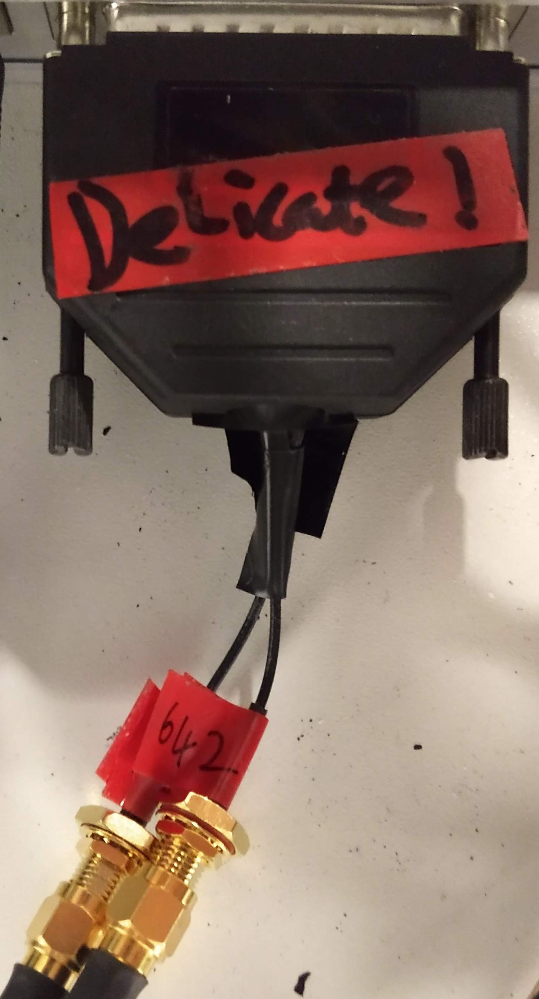
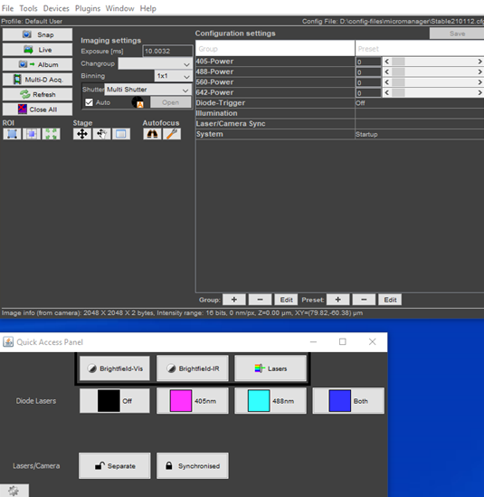
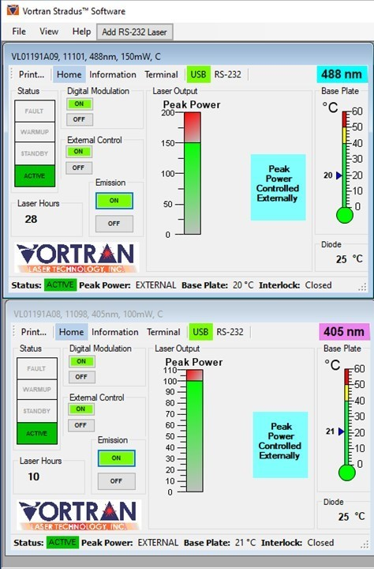
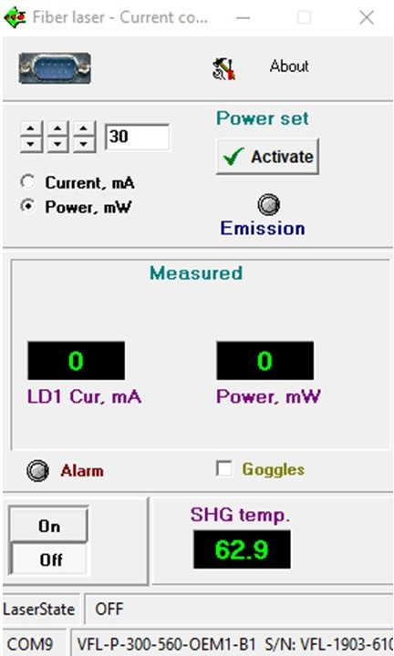
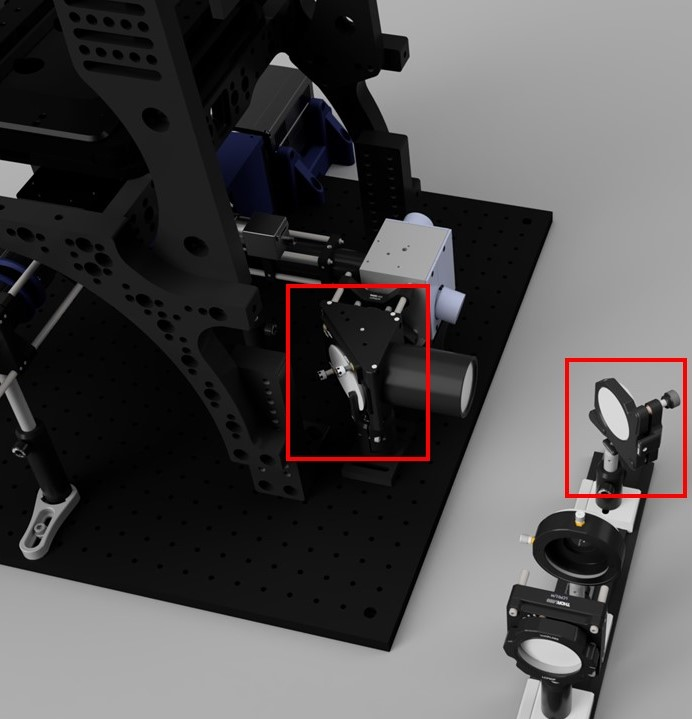

Hardware
Parts
⇩ Download ⇩Connections
A circuit diagram style drawing of control connections as laid out on our iteration of LifeHack.
TriggerScope
The Triggerscope uses Micromanager specific firmware available here installed through the Arduino IDE.

- DAC1: 405nm laser power control
- DAC2: 488nm laser power control
- DAC3: AOTF (560nm channel)
- DAC4: AOTF (642nm channel)
- TTL-Out1: 405nm laser triggering
- TTL-Out2: 488nm laser triggering
- TTL-Out3: Shutter triggering
- TTL-Out4: Camera triggering
- TTL-In1: Camera triggering
The AOTF signal generator takes input from the TriggerScope via a 25 pin connector. Therefore a custom connector is required to convert from SMA. This just requires a blank 25 pin connector and 2 SMA-Blank wires to solder into the required pins. Care must be taken to reinforce the finished assembly as otherwise it is extremely fragile.
Software
Micromanager
We use Micromanager gamma 2.0.0-gamma1_20210124 as our microscope control software. The config file to work with LifeHack is available here. To be able to record data at the high speeds required for STORM imaging the default ImageJ JAVA garbage collector must be changed to the CMS garbage collector. Replace the ImageJ.cfg file in the micro-manager directory with ours.
Vortran Stradus Lasers
The 405nm and 488nm lasers are controlled through the "Vortran Stradus Software" and need to be set up as below to respond correctly to MicroManager's commands.
MPB VFL Lasers
The 560nm and 642nm lasers are controlled by the "Fiber Laser" software. This is used to set the power output from the laser. This should be set so that the power delivered to the sample can be adjusted using only the AOTF through Micromanager during imaging.
Regular Alignment
Regular alignment of the system is conducted using the mirror pair at the back port of the microscope. A live image of a fluorescent alignment slide and a spot on the ceiling above serve as reference points.
Please observe all appropriate laser safety precautionswhen performing alignment with an open, vertical laser beam, and operate lasers at minimum power required for alignement.
We have experienced that the Galvos exhibit a small degree of drift over time and will need to be periodically adjusted using the "X-shift" and "Y-shift" settings. This acts as fine alignment following the coarse alignment of the mirror pair. This can be done in place by viewing the live image of a fluorescence test slide and checking for uniform transition from epi to TIRF illumination across the frame.
It is recomended that a rolling record of these settings is kept so that a significant drift from the origional zero point will be noticed. In this instance the full zeroing procedure can be conducted.